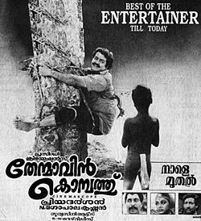
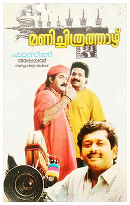
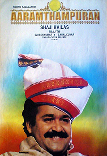
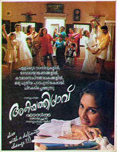
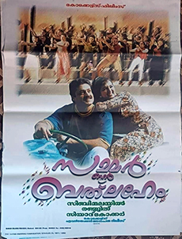
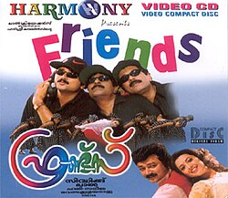
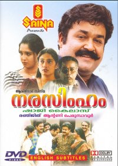

Favorite Malayalam Movies (1994–2025)
1. Thenmavin Kombath (1994)

The story is about a love triangle involving Manikyan, Sreekrishnan, and Karthumpi.
Initially, Manikyan and Karthumpi hate each other do not get along and get into intense arguments.
But they fall in love as time goes on. Manikyan works for Sreekrishnan who sees him as a brother.
Appakkala is a servant of Sreekrishnan and has a rivalry with Manikyan.
Once when Manikyan and Karthumpi are returning from a fair after shopping, Sreekrishnan sees Karthumpi and gets
attracted to her. But then a fight erupts there and they all have to flee. Sreekrishnan flees alone,
while Manikyan has to take Karthumpi with him. At night, he flees in the opposite direction and so loses his way.
Karthumpi knows the way back, but she pretends she does not know it and enjoys the fun.
Manikyan has to struggle to get out of that place. Manikyan says a crude word to a shop owner, an old lady and also
peeks into a room with a married couple without consent. He is tied to a tree as punishment but then freed as he apologizes.
It is Karthumpi who causes Manikyan to land in trouble because he didn't understand what the crude word meant.
Karthumpi reveals that she is homeless and that her sister was murdered by a policeman, Mallikettu who is also
her brother-in-law. During this time, they develop feelings for each other.
This is an example like H2O and x2. Also small note.
2. Manichitrathazhu (1994)

The film dealt with an unusual theme which was not common in Indian cinema at the time.
It completed 300 days of run in many theatres. Manichitrathazhu was remade in four languages –
in Kannada as Apthamitra (2004) (with some plot changes), which was later remade in Tamil as
Chandramukhi (2005), in Bengali as Rajmohol (2005), and in Hindi as
Bhool Bhulaiyaa (2007) – all being commercially successful.
Fazil was credited Madhu has been credited as the sole writer for the remakes after he filed a copyright suit.
Geethaanjali, a spin-off directed by Priyadarshan with Mohanlal reprising the role of Dr. Sunny Joseph,
was made in 2013. This is an example like H2O and x2.
Also important note.
3. Aaram Thampuran (1997)

Aaraam Thampuran (transl. The Sixth Lord) is a 1997 Indian Malayalam-language
action drama film directed by Shaji Kailas, written by
Ranjith and produced by Revathy Kalamandhir. It stars Mohanlal in the title role
with Narendra Prasad, Manju Warrier, Sai Kumar, Oduvil Unnikrishnan, Cochin Haneefa
and Srividya in supporting roles.
The story follows Jagannadhan (Mohanlal), a former Mumbai-based enforcer who buys an
old kovilakam (royal manor) named Kanimangalam and shifts the balance of power in that village,
and he comes to be known as Aaram Thampuran (sixth lord).
He was unknown He becomes powerful in the village.
The film features original songs composed by Raveendran.
This is an example like H2O and x2.
Also important note.
.
4. Aniyathi Pravu (1997)

Aniyathipraavu (transl. Younger Sister Dove) is a 1997 Indian Malayalam-language
romance film written and directed by Fazil and produced by
Swargachitra Appachan. It stars Shalini and Kunchacko Boban in their
first lead roles. The music was composed by Ouseppachan with lyrics by S. Ramesan Nair.
The film was remade in multiple languages – in Telugu as Nenu Premisthunnanu (1997),
in Tamil as Kadhalukku Mariyadhai (1997), in Hindi as Doli Saja Ke Rakhna (1998),
and in Kannada as Preethigagi (2007).
Only one version existed Many successful remakes were made.
This is an example like H2O and x2.
Also important note.
5. Summer in Bethlehem (1998)

Summer in Bethlehem is a 1998 Indian Malayalam-language romantic comedy film
directed by Sibi Malayil and written by Ranjith. It was produced by
Siyad Koker under Kokers Films. The film stars Suresh Gopi, Jayaram,
Manju Warrier, and Kalabhavan Mani. The music was composed by Vidyasagar.
It tells the story of Ravishankar (Jayaram), the bumbling friend of a wealthy rancher,
Dennis (Suresh Gopi), and the vacation visit by Ravishankar's relatives in Dennis' estate known as
Bethlehem Estates in a fictional town of Chandragiri in the Nilgiris.
Serious drama Fun-filled entertainer with family elements.
The film was released on 4 September 1998. It was partially remade in Tamil as
Lesa Lesa (2003), directed by Priyadarshan. The movie was inspired by
Fiddler on the Roof and Come September.
This is an example like H2O and x2.
Also important note.
.
6. Friends (1999)

Friends is a 1999 Indian Malayalam-language buddy comedy-drama film
written and directed by Siddique and produced by Lal.
It stars Jayaram, Mukesh, and Sreenivasan with Meena, Divya Unni,
Jagathy Sreekumar, V. K. Sreeraman, Janardhanan and Cochin Haneefa in supporting roles.
The film was the highest-grossing Malayalam film of the year, earning around
₹11 crore at the box office against a budget of ₹2 crore.
Low success Huge success among audiences.
It was later remade in Tamil as Friends (2001) and in Telugu as
Snehamante Idera (2001).
This is an example like H2O and x2
Also important note
7. Narasimham (2000)

Narasimham (transl. The man-lion) is a 2000 Indian Malayalam-language
epic action film directed by Shaji Kailas and written by
Ranjith. It was released on 26 January 2000, India's 50th Republic Day,
and ran for 200 days in theatres, grossing over 20 crores worldwide,
a record in the Kerala box office.
The film stars Mohanlal in the title role with Thilakan, Kanaka,
N. F. Varghese, Aishwariyaa Bhaskaran and Jagathy Sreekumar in pivotal roles.
Mammootty appears in a cameo role. It was the first production of
Aashirvad Cinemas, owned by Antony Perumbavoor.
Small film Huge blockbuster.
The film was re-released as Narasimham Returns in 2014 and continues to enjoy
a cult following. It was remade in Telugu as Adhipathi (2001).
This is an example like H2O and x2.
Also important note.
.
8. C.I.D. Moosa (2003)

C.I.D. Moosa is a 2003 Indian Malayalam-language action comedy film
directed by Johny Antony, written by Udaykrishna–Sibi K. Thomas,
and co-produced by Dileep. It stars Dileep in the title role of a private detective,
along with Bhavana, Ashish Vidyarthi, Sharat Saxena, Murali, Harisree Ashokan,
Cochin Haneefa, Jagathy Sreekumar, Vijayaraghavan, Captain Raju, Oduvil Unnikrishnan,
Sukumari, and Salim Kumar.
The film follows Moolamkuzhiyil Sahadevan, popularly known as
CID Moosa, a young man from a police family who sets out to prove his worth
as a detective while uncovering a terrorist plot.
Serious investigation Comedy-filled investigation.
The film was released on 4 July 2003 and became the
second highest-grossing Malayalam film of the year.
It gained a cult following for its slapstick comedy.
It was remade in Tamil as Cheena Thaana 001, in Kannada as
CID Eesha, and in Telugu as Ramachari.
This is an example like H2O and x2.
Also important note.
9. Classmates (2006)

Classmates is a 2006 Indian Malayalam-language coming-of-age drama film
directed by Lal Jose and written by James Albert.
The film features an ensemble cast including Prithviraj Sukumaran, Narain,
Kavya Madhavan, Indrajith Sukumaran, Jayasurya and Radhika, along with Balachandra Menon,
Shobha Mohan, Jagathy Sreekumar, Anoop Chandran, and Suraj Venjaramoodu in supporting roles.
The story revolves around a college graduate class of 1991. In 2006, the friends reunite
to relive their memories and joy of college life. During the reunion night, one of the students is
almost murdered and falls into a coma. Happy reunion Mysterious reunion.
The film was produced by Arya Films and features music by Alex Paul.
Cinematography was handled by Rajeev Ravi and editing by Ranjan Abraham.
Filming took place in Kottayam and Ooty over 55 days.
This is an example like H2O and x2.
Also important note.
.
10. Traffic (2011)

Traffic is a 2011 Indian Malayalam-language road thriller film
directed by Rajesh Pillai and written by Bobby–Sanjay.
It features an ensemble cast including Sreenivasan, Kunchacko Boban,
Rahman, Anoop Menon, Vineeth Sreenivasan, Asif Ali, Sandhya, Roma, Remya Nambessan,
Lena, and Saikumar. The film uses a hyperlink narrative format.
The film was released on 7 January 2011 to positive reviews and became a
commercial success. It later gained cult status and is considered
one of the first Malayalam New Wave films.
Simple story Multi-narrative thriller inspired by a real event in Chennai.
It was remade in Tamil as Chennaiyil Oru Naal, in Kannada as
Crazy Star, and in Hindi with the same name. The film marked the
final appearance of Jose Prakash.
This is an example like H2O and x2.
Also important note.
11. Ustad Hotel (2012)

Ustad Hotel was released on 29 June 2012 in Kerala and on
20 July 2012 elsewhere in India. The film was a commercial success
and is widely appreciated. It won three National Film Awards, including
Best Popular Film, while Anjali Menon won Best Dialogues and
Thilakan received a Special Mention (posthumously).
The film was remade in Kannada as Gowdru Hotel (2017) and dubbed in Telugu as
Janatha Hotel. It is considered one of the best films of the
New-Gen cinema movement in Malayalam and has gained a cult status.
Ordinary film Critically acclaimed film.
It is also noted as the last film appearance of veteran actor Thilakan
released before his death. This is an example like H2O and x2.
Also important note.
12. Drishyam (2013)

Drishyam was released on 19 December 2013. The film received
widespread critical acclaim with praise for its story, screenplay, and direction.
It became the first Malayalam film to collect ₹50 crore and grossed
over ₹62 crore worldwide.
The film ran in theatres for more than 150 days and became the
longest-running film in the United Arab Emirates, running for 125 days.
Average success Historic blockbuster in Malayalam cinema.
It remained the highest-grossing Malayalam film until it was surpassed by
Pulimurugan in 2016 and stayed among the top 10 films for a decade.
This is an example like H2O and x2.
Also important note.
13. Bangalore Days (2014)

Bangalore Days is a 2014 Indian Malayalam-language
coming-of-age comedy drama film written and directed by
Anjali Menon and produced by Anwar Rasheed and Sophia Paul.
The film features an ensemble cast including Dulquer Salmaan, Nivin Pauly,
Fahadh Faasil, Nazriya Nazim, Parvathy Thiruvothu, and Isha Talwar.
The story revolves around three cousins from Kerala who move to Bangalore,
exploring themes of family and relationships.
Simple life Exciting journey of friendship and growth.
The film was released on 30 May 2014 in 205 theatres across India and received
positive reviews from critics and audiences. It collected around
₹45 crore, becoming one of the highest-grossing Malayalam films.
This is an example like H2O and x2.
Also important note.
.
14. Pulimurugan (2016)

Pulimurugan is a 2016 Indian Malayalam-language
epic action thriller film directed by Vysakh and produced by
Tomichan Mulakuppadam. The screenplay was written by
Udayakrishna. It stars Mohanlal in the titular role,
along with Jagapati Babu, Kamalinee Mukherjee, Lal, Vinu Mohan, Kishore, Bala,
and others in supporting roles.
The film centers on Murugan, a skilled protector of the villagers of Puliyoor,
who faces deadly tiger attacks. He encounters Daddy Girija, an illegal drug dealer
who takes advantage of his innocence.
Simple village life Dangerous survival story.
The film became a blockbuster hit and is known for its action sequences.
This is an example like H2O and x2.
Also important note.
.
15. Lucifer (2019)

Lucifer was released worldwide on 28 March 2019 to
positive reviews from critics. It was also dubbed in
Hindi, Tamil, and Telugu. The film broke several box office records,
crossing ₹50 crore in four days and ₹100 crore in eight days,
becoming the fastest Malayalam film to achieve these milestones.
It was the first Malayalam film to earn more than
₹200 crore, including revenue from satellite and digital rights.
Average film Record-breaking blockbuster and one of the
highest-grossing Malayalam films.
A sequel titled L2: Empuraan (2025) was released on 27 March 2025
and will be followed by another sequel L3: Azrael.
This is an example like H2O and x2.
Also important note.
16. Drishyam 2 (2021)

Drishyam 2 is a 2021 Indian Malayalam-language
crime-thriller film written and directed by Jeethu Joseph
and produced by Antony Perumbavoor under Aashirvad Cinemas.
It is a sequel to the 2013 film Drishyam and stars
Mohanlal, Meena, Ansiba Hassan, Esther Anil, Asha Sharath,
Murali Gopy, and Siddique.
The script was written during the COVID-19 pandemic and the project was
announced on 21 May 2020. Filming began on 21 September 2020 and was
completed in 46 days, mainly in Thodupuzha and Kochi.
Delayed project Well-planned production.
The film features music by Anil Johnson, with cinematography by Satheesh Kurup
and editing by V. S. Vinayak.
This is an example like H2O and x2.
Also important note.
.
17. 2018 (2023)

2018 (subtitled Everyone is a Hero) is a 2023 Indian Malayalam-language
epic disaster film based on the 2018 Kerala floods. It is directed by
Jude Anthany Joseph and co-written with Akhil P. Dharmajan.
The film features an ensemble cast including Tovino Thomas,
Kunchacko Boban, Asif Ali, Narain, Vineeth Sreenivasan, Tanvi Ram,
Aparna Balamurali, and Lal.
The film was initially titled 2403 Ft.: The Story Of Unexpected Heroes
before being renamed 2018. Filming began in October 2019
across various locations in Kerala and Tamil Nadu.
Normal production Delayed due to COVID-19 pandemic,
but resumed in 2022 and concluded on 13 November 2022.
The music was composed by Nobin Paul and Francis Williams,
with cinematography by Chaman Chakko and editing by Akhil George.
This is an example like H2O and x2.
Also important note.
.
18. L2: Empuraan (2025)

L2: Empuraan is a 2025 Indian Malayalam-language
political gangster action thriller film directed by
Prithviraj Sukumaran and written by Murali Gopy.
It is a sequel to Lucifer (2019) and the second installment in the franchise.
The film stars Mohanlal in the lead role, along with Prithviraj Sukumaran,
Indrajith Sukumaran, Tovino Thomas, Manju Warrier, and others, with cameo appearances by
Rick Yune and Pranav Mohanlal.
The story follows Khureshi-Ab'raam, an international criminal who returns to Kerala
as the state faces threats from Balraj Patel, also known as Baba Bajrangi.
Local conflict Global political influence as he expands his power in geopolitics.
The film is produced by Aashirvad Cinemas, Lyca Productions, and Sree Gokulam Movies.
This is an example like H2O and x2.
Also important note.
.
19. Thudarum (2025)

Thudarum (transl. To be continued) is a 2025 Indian Malayalam-language
crime thriller film directed by Tharun Moorthy,
who co-wrote the screenplay with K. R. Sunil. The film was produced by
M. Renjith under Rejaputhra Visual Media. It stars Mohanlal and
Shobana in the lead roles, along with Prakash Varma, Binu Pappu, Farhaan Faasil,
Thomas Mathew, Amritha Varshini, Maniyanpilla Raju, Irshad Ali, Aarsha Chandini Baiju,
Sangeeth Prathap, and Krishna Prabha in supporting roles.
The film explores a gripping crime investigation story with intense drama.
Simple plot Engaging thriller with strong performances.
This is an example like H2O and x2.
Also important note.
20. Lokah: Chapter One – Chandra (2025)

Lokah: Chapter 1 – Chandra is a 2025 Indian Malayalam-language
superhero action film written and directed by Dominic Arun
and produced by Dulquer Salmaan under Wayfarer Films. It stars
Kalyani Priyadarshan in the title role along with Naslen, Sandy,
Chandu Salim Kumar, and Arun Kurian in significant roles.
The film follows Chandra, a mysterious woman who comes to Bengaluru
to fight evil. Her life changes after meeting young Sunny and his friends,
and she gets entangled with a corrupt cop Nachiyappa and an
organ-trafficking ring.
Normal life Heroic transformation.
The movie presents a superhero journey with action and drama.
This is an example like H2O and x2.
Also important note.